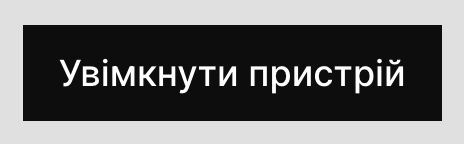
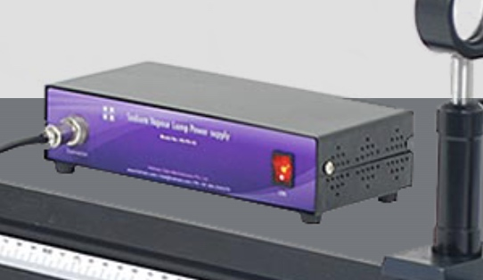
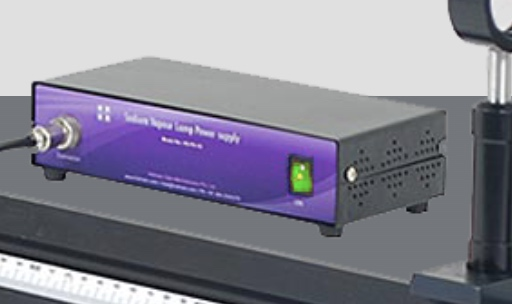
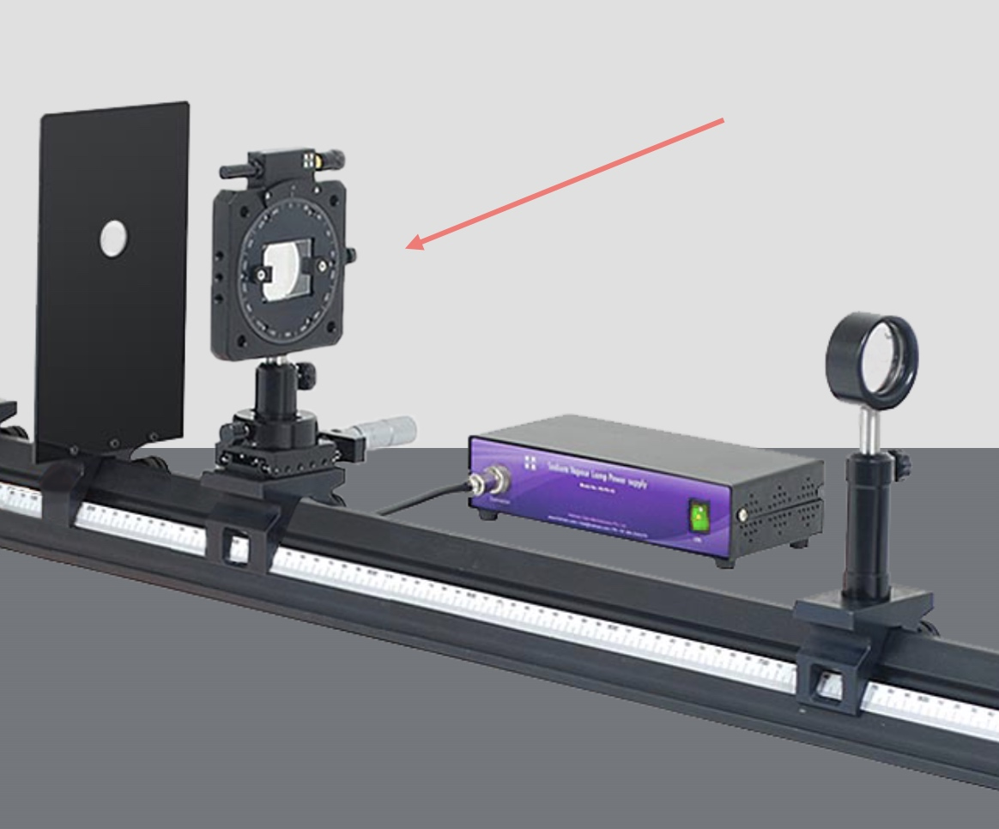
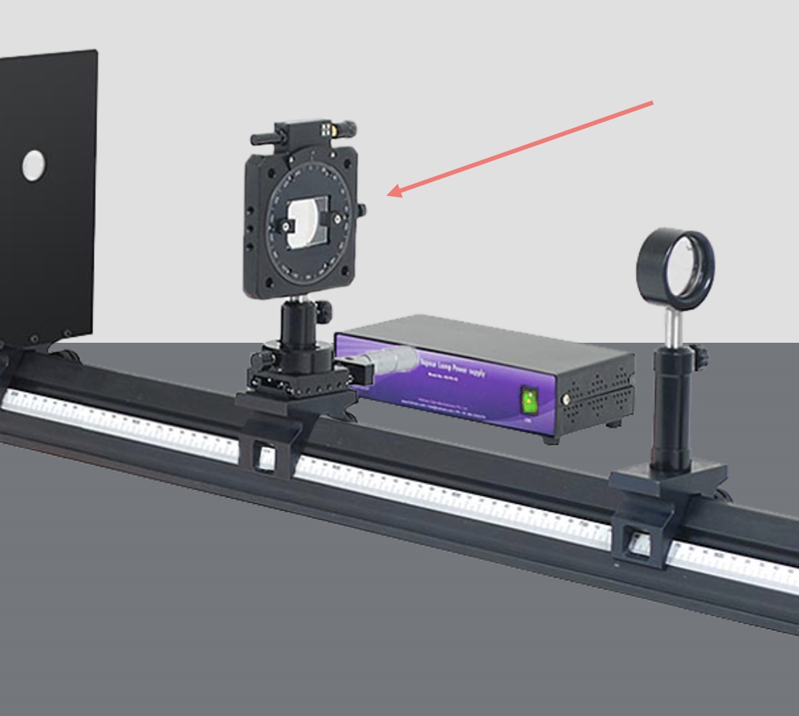

Справка по выполнению
лабораторной работы
На этой страничке описываются ключевые моменты при выполнении лабораторной работы, которые могут вызвать вопросы.
1. На экране выполнения Вы увидите прибор с двумя элементами управления. Для начала выполнения необходимо включить прибор при помощи соответствующей кнопки:
 Изображение 1, начало выполнения1-a. Если установка включена, кнопка на её коробке должна "загореться" зелёным цветом (см. изображение). Также, эту кнопку можно использовать для включения и выключения:
 Изображение 2, выключенное состояние  Изображение 3, включенное состояние2. После включения прибора можна переходить к просмотру полученного изображения для снятия замеров. Для этого нажимаем на кнопку "Посмотреть в окуляр":
 Изображение 4, просмотр интерференционной картины
Изображение 4, просмотр интерференционной картины
3. При просмотре интерференционной картины можно заменить фильтр и сразу увидеть другую интерференционную картину:
 Изображение 5, смена фильтра
Изображение 5, смена фильтра
4. Снизу также находится ползунок, с помощью которого можно перемещать шкалу влево или вправо:
 Изображение 6, ползунок перемещения линейки
Изображение 6, ползунок перемещения линейки
5. Выполнение лабораторной работы предусматривает замеры расстояния между максимумами на разных расстояниях от бипризмы до экрана. Положение можно менять, если навести курсор мыши на бипризму и "потянуть":
 Изображение 7, начальное положение Изображение 8, второе положение